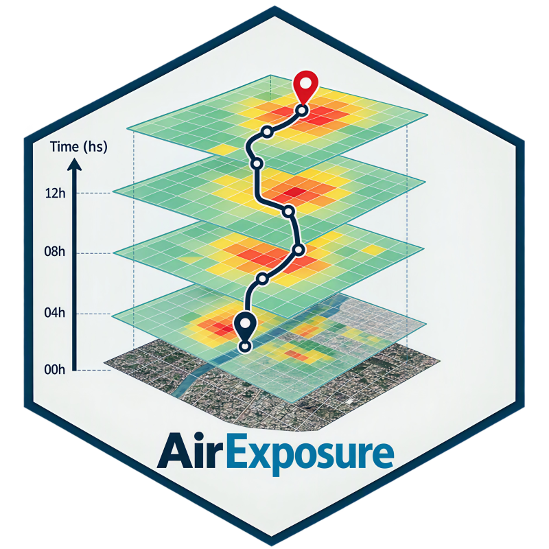

Retrieve Alternative Routes from the TomTom Routing API
trajectories_tomtom.RdRetrieves up to five alternative routes between an origin and destination using the TomTom Routing API. The function returns the route geometry as point coordinates together with travel time, distance, and traffic-related metrics for each alternative route.
Arguments
- origin
Character string containing the origin coordinates in the format
"latitude,longitude".- dest
Character string containing the destination coordinates in the format
"latitude,longitude".- mode
Character. Travel mode accepted by the TomTom Routing API (e.g.,
"car","truck","pedestrian","bicycle").- hour_trajectory
Character. Departure date and time in the format
"YYYY-mm-dd HH:MM:SS".- key
Character. Valid TomTom Routing API key.
Value
A data frame with one row per route point and the following variables:
- ID
Sequential point identifier within each route.
- long
Longitude of the route point.
- lat
Latitude of the route point.
- departureTime
Departure time returned by the API.
- arrivalTime
Arrival time returned by the API.
- lengthInKM
Route length in kilometers.
- trafficLengthInKM
Length affected by traffic in kilometers.
- travelMode
Travel mode used for routing.
- trafficDelayInMinutes
Estimated traffic delay in minutes.
- travelTimeInMinutes
Estimated travel time in minutes.
- liveTrafficIncidentsTravelTimeInMinutes
Travel time considering live traffic incidents.
- historicTrafficTravelTimeInMinutes
Travel time estimated from historical traffic conditions.
- noTrafficTravelTimeInMinutes
Estimated travel time assuming no traffic.
- alternative
Alternative route identifier.